Quick start
The four jobs you will do most often. Each one links to the full explanation.
Set up a bank's limits
- Home → Treasury → Bank Limits
- New Facility: limit, currency, dates
- + Tranche for what the bank released
- + Sublimit, tick its business lines
Add a bank rule
- Select the facility → + Rule
- Choose the rule, what it is on, and the limit
- Read the sentence at the top: it says what the rule will do
- Ask a checker to Verify
Release a tranche
- Select the Draft tranche → Edit
- Status Active
- Enter the release date
- Save: Available goes up at once
Choose the source of funds
- Open the task from the inbox
- Suggest, or type amounts
- Fix any red badge
- Execute, then Complete
About this manual
Treasury tells you how much bank money Capitra can use today, on what conditions, and which money pays each disbursement. The module has two screens:
| Step | Screen | What you do there |
|---|---|---|
| 1 | Bank Limits | Record each bank's facilities, the tranches the bank released, the sublimits for each business line, and the bank's rules. See live usage. |
| 2 | Treasury Disburse | At the last step of a disbursement, choose the source of funds: own funds, one bank sublimit, or a split across several. |
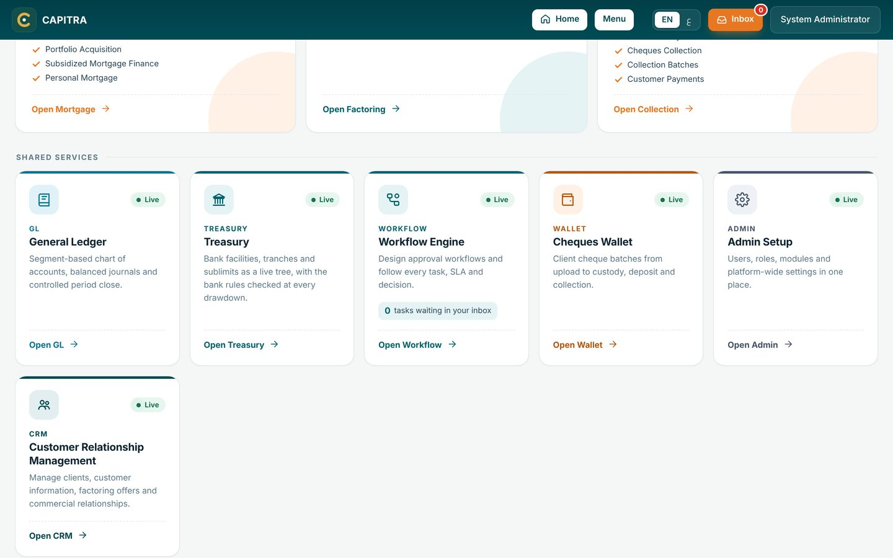
One running example, Bank A, is used throughout, so every number links to the next.
Key concepts
Bank money is organized as a tree with four levels. Money can be drawn only from the lowest level, the sublimit, and only up to what is free at every level above it.
| Level | What it is | Bank A example |
|---|---|---|
| Bank | A bank that lends to us. | Bank A |
| Facility | The agreement the bank signed with us: the approved limit, the rate and the dates. | A-RCF-2026, limit 100M, revolving, ends 31 Dec 2028 |
| Tranche | The part of the facility the bank has actually released. A tranche not released yet is Draft and cannot be drawn. | Tranche 1 = 60M Active · Tranche 2 = 40M Draft |
| Sublimit | A slice of a tranche that may fund only certain business lines (its scope). No line ticked means all lines. | Factoring 40M · Leasing 20M |
Three amounts on every level
- Outstanding (teal): drawn and not yet repaid.
- Reserved (orange): held for a disbursement that is approved but not yet paid.
- Available: the smallest of (limit − outstanding − reserved) on this level and on every level above it.
Bank A today, worked through
| Level | Limit | Outstanding | Reserved | Free on this level | Available to draw |
|---|---|---|---|---|---|
| Factoring sublimit | 40M | 28M | 4M | 8M | 8M |
| Leasing sublimit | 20M | 4M | 0 | 16M | 16M |
| Tranche 1 | 60M | 32M | 4M | 24M | 24M |
| Tranche 2 (Draft) | 40M | 0 | 0 | 40M | 0 not released |
| Facility | 100M | 32M | 4M | 64M | 24M |
The facility has 64M unused, but only 24M can be drawn, because 40M sits in Tranche 2, which the bank has not released. When it is released, change Tranche 2 to Active and the 40M becomes available.
Dedicated pool
Its own money. The dedicated sublimits of a tranche cannot add up to more than the tranche: 40M + 20M = 60M = Tranche 1.
Shared cap
No money of its own. It only caps how much its business lines may take from the tranche, for example "Leasing may use at most 15M of Tranche 1".
Revolving means a repaid amount can be drawn again. In a non-revolving facility, a repayment does not free the limit.
Bank rules
A bank rule is a condition from the bank's term sheet on how its money may be used. Capitra checks every active rule each time money is drawn from that bank. A rule covers all of the bank's facilities, or one facility.
| Rule | Meaning | Bank A example |
|---|---|---|
| Maximum share (concentration) | One debtor, seller, debtor group, business line, product or client segment may not take more than a percent or an amount of the bank's money. | Any debtor at most 15% of the funded pool, warn at 12% |
| Exclude | A named debtor, seller, debtor group, business line, product or client segment may not be financed with this bank's money. | Debtor group Government entities |
| Maximum invoice tenor | The invoice may not be longer than a number of days. | At most 120 days |
What a rule can be on
| Rule on | Taken from the disbursement | Example from a term sheet |
|---|---|---|
| Debtor, Seller, Debtor group | The invoices' debtors and the client | Any debtor at most 15% |
| Business line | The agreement: Factoring or Reverse Factoring | On one facility: Leasing at most 70%, Factoring at most 30% of the facility limit (two rules) |
| Product | The disbursement's product | The bank does not fund product Reverse Factoring |
| Client segment | The client's segment: SME, Corporate, Large corporate | The bank does not fund Corporate clients |
For a business line, product or client segment the whole disbursement counts, because the whole disbursement is one business line, one product and one client. Activity (industry) and asset rules will follow when those lists are added to Capitra.
Percent of what?
Funded pool
What we have actually drawn from this bank (outstanding + reserved). We drew 200M from Bank A, so 15% = 30M per debtor.
Facility limit
The approved limit, used or not. On a 100M facility, 15% = 15M per debtor.
Take the basis from the term sheet's wording.
What happens on a breach
| Setting | Effect |
|---|---|
| Block | This bank's money cannot be used. Choose another source. |
| Needs override | Allowed only if a second user approves an exception. |
| Warn | Allowed, with a visible warning. |
| Warn at % | An early warning before the limit, for example at 12% when the limit is 15%. |
A new or changed rule is Waiting for verification and is not checked until a second user verifies it. The person who made the change cannot verify it. To end a rule, use Stop and give the reason. Stopped rules stay in history.
Administration → Module Settings → Treasury decides two of these controls: Bank rule needs a maker and a checker (No lets the person who saved a rule verify it) and Override needs a second user (No lets the person who chose the sources approve the override). Both are Yes unless an administrator changes them, and changing them needs a second administrator's approval.
Under each concentration rule the screen shows who is closest to the limit today, for example "Highest now: LG Electronics 11.4%". within above warning breach
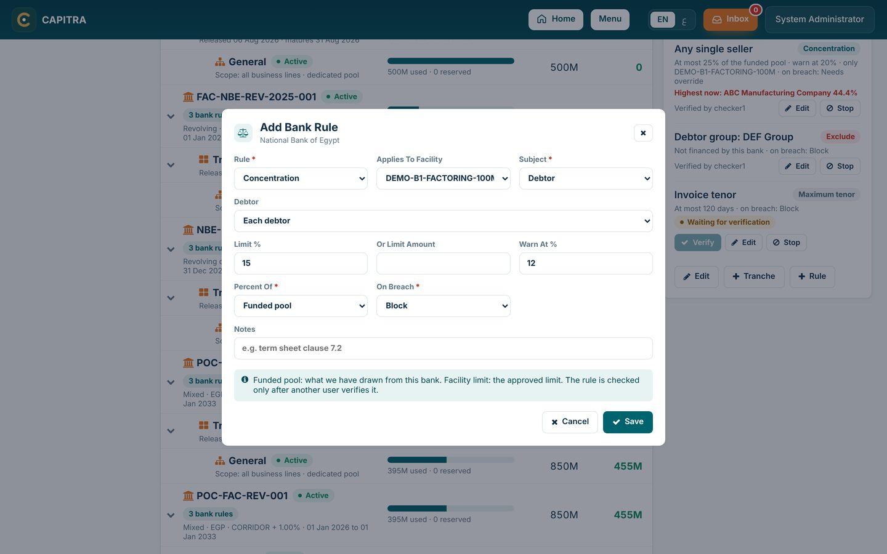
Debtor and supplier concentration
There are two different concentration limits, and they answer two different questions.
| Our own concentration | Bank concentration | |
|---|---|---|
| Question | Should we finance this invoice at all? | Whose money can pay for it? |
| Set by | Our credit policy, in each factoring agreement | The bank, in its term sheet (section 3) |
| Measured on | The customer's factoring agreement | The money we drew from that bank |
| Checked at | Invoice upload (warning) and approval (block) | Treasury Disburse (step 2) |
| If it fails | The invoice stops, unless management approves an exception | Use another bank or own funds |
Every invoice passes three gates in order.
Agreement limit
The client's total stays within its factoring agreement.
Debtor or supplier share
No single debtor (or supplier) takes too much of that agreement.
Bank rule
The bank whose money we use allows this debtor and invoice.
Classic factoring example
Our client ABC sells us its invoices. Many debtors owe ABC. ABC's agreement: limit 100M, no debtor above 25% (= 25M). The debtor LG already uses 20M. A new LG invoice of 4M arrives.
ABC uses 50M. 50M + 4M = 54M, below 100M.
PassLG goes from 20M to 24M, below 25M. (An invoice of 10M would take LG to 30M and stop.)
PassBank A: any debtor at most 15% of a 200M funded pool = 30M. LG holds 28M: 28M + 4M = 32M. Pay 2M from Bank A and 2M from Bank B, or all from Bank B or own funds.
Bank A blockedReverse factoring example
Our client is the buyer, LG. LG's suppliers sell us the invoices LG owes them, and LG pays us at maturity. LG's agreement: limit 100M, no supplier above 40% (= 40M). Today: ABC 30M, XYZ 15M, GHI 5M, total 50M. ABC sends a new invoice of 15M.
50M + 15M = 65M, below 100M.
PassABC goes from 30M to 45M, above 40M. We finance 10M now; the other 5M needs a management exception.
10M of 15MLG is the debtor, so Bank A's debtor rule applies: cap 30M, LG holds 28M. Pay 2M from Bank A (LG reaches exactly 30M) and 8M from Bank B.
SplitIn classic factoring the debtors change, so we cap each debtor inside the client's agreement. In reverse factoring the debtor is always the buyer, so we watch the buyer's total and cap each supplier. Bank rules see the buyer on every reverse-factoring drawing, so one large buyer can use up a bank's room quickly.
Step 1: Bank Limits screen
Bank Limits shows every bank's money on one page, and it is where all limits and rules are maintained.
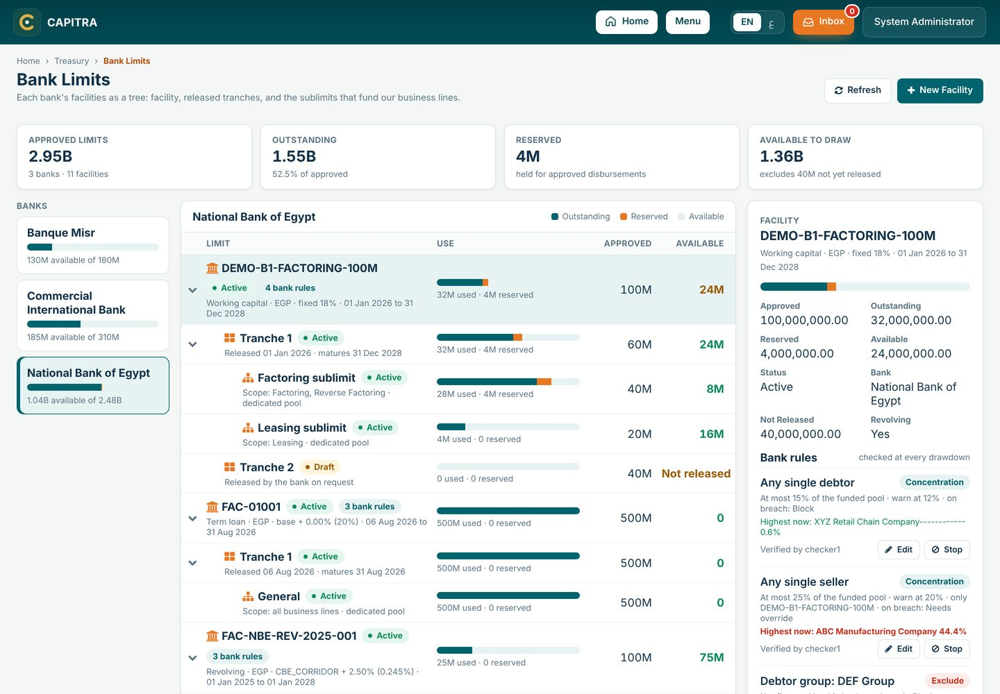
- Top cards: approved limits, outstanding, reserved and available to draw for all banks. The last card also shows what is not yet released.
- Banks list: one card per bank with its usage bar. Click a bank to open its tree.
- Tree: facility → tranche → sublimit, each with its bar, approved and available amount. Available in green is the row's own free amount; in orange, a level above is the tighter limit.
- Side panel: details of the selected row, the bank's rules (when a facility is selected), and the action buttons.
Tasks
| To do this | Do this | Capitra checks |
|---|---|---|
| Add a facility | New Facility, then the bank, reference, type, limit, currency, rate and dates | Unique reference; maturity after start |
| Add a tranche | Select the facility → + Tranche | Tranches together ≤ facility limit |
| Release a tranche | Select the tranche → Edit → Status Active, enter the release date | A release date is required |
| Add a sublimit | Select the tranche → + Sublimit, tick its business lines | Dedicated sublimits ≤ tranche |
| Change a limit | Select the row → Edit | Not below what is used or reserved |
| Add a bank rule | Select the facility → + Rule | Values fit the type; warning below limit |
| Verify a rule | Second user: Verify on the rule | Not the user who made the change |
| End a rule | Stop, then give the reason | A reason is required |
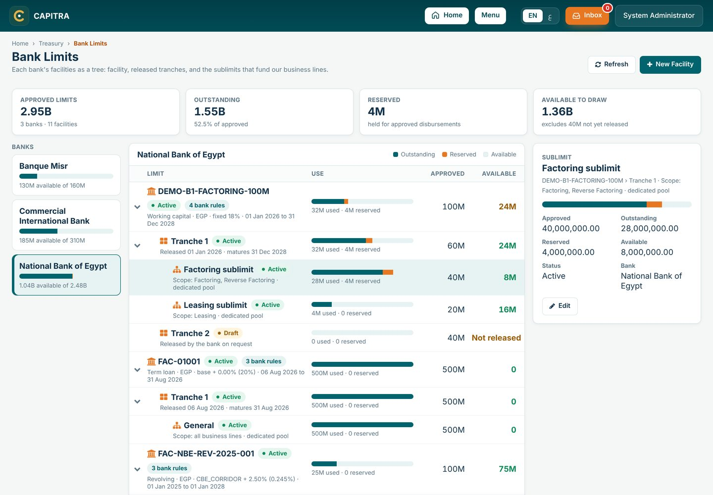
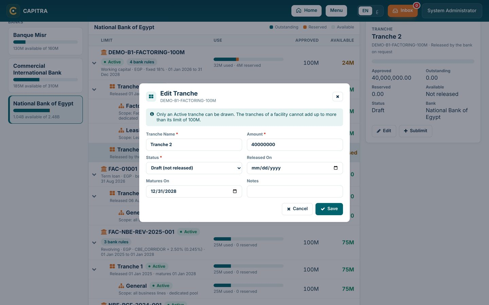
When Treasury was installed, every open facility received Tranche 1 (its whole limit, Active) and a General sublimit (all business lines), with its balance carried in. Reshape them to match the term sheet, for example reduce Tranche 1 to 60M and add a 40M Draft Tranche 2.
Step 2: Treasury Disburse
Treasury Disburse is the last step of a disbursement. Treasury chooses which money pays the net amount, and Capitra checks each choice against the limits and bank rules before anything is paid.
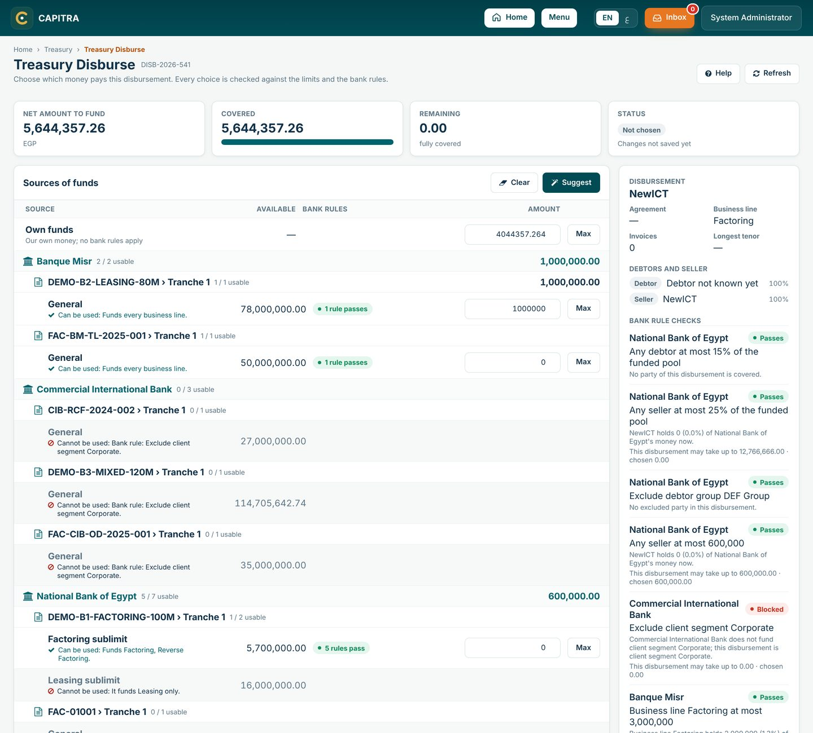
What the screen shows
- Header: the disbursement, the client, the debtor (or the buyer in reverse factoring), the business line and the net amount to fund.
- Factoring or reverse factoring: the page follows the deal's product. In factoring it lists the Debtors (who owe the invoices) and the Seller (our client). In reverse factoring it lists the Buyer (debtor), who is our client and pays us at maturity, and the Suppliers, who sold the invoices and are paid now. The bank rule checks use the same words.
- Limits tree: Own funds first, then each bank → facility → tranche → sublimit in the disbursement's currency. Each bank and facility shows how many of its sublimits can be used, and the total you chose under it.
- Each sublimit says why in one line: ✓ Can be used with what it funds, or ⊘ Cannot be used with the reason. A sublimit that cannot be used is grey and has no amount box.
- A usable line: available amount, an amount box, a Max button and a live badge for each bank rule that applies.
- Checks and total: covered against net, and any line that is blocked or needs an override.
Who is paid: the party popup
Click any name under Buyer and suppliers (or Debtors and seller) to open its details. In reverse factoring this is how you check each supplier before Execute.
- Amount to receive: the supplier's share of the net amount, and the bank account it will be paid into. An orange box means the supplier has no verified bank account that can be paid yet: add and verify one in Customer 360 first.
- Bills to be paid: the supplier's invoices in this disbursement, with invoice date, due date, invoice amount and amount financed. Not-eligible invoices are grey with their reason, and are not paid.
- Bank accounts: every account of the supplier. Can be paid means verified and the waiting days have passed.
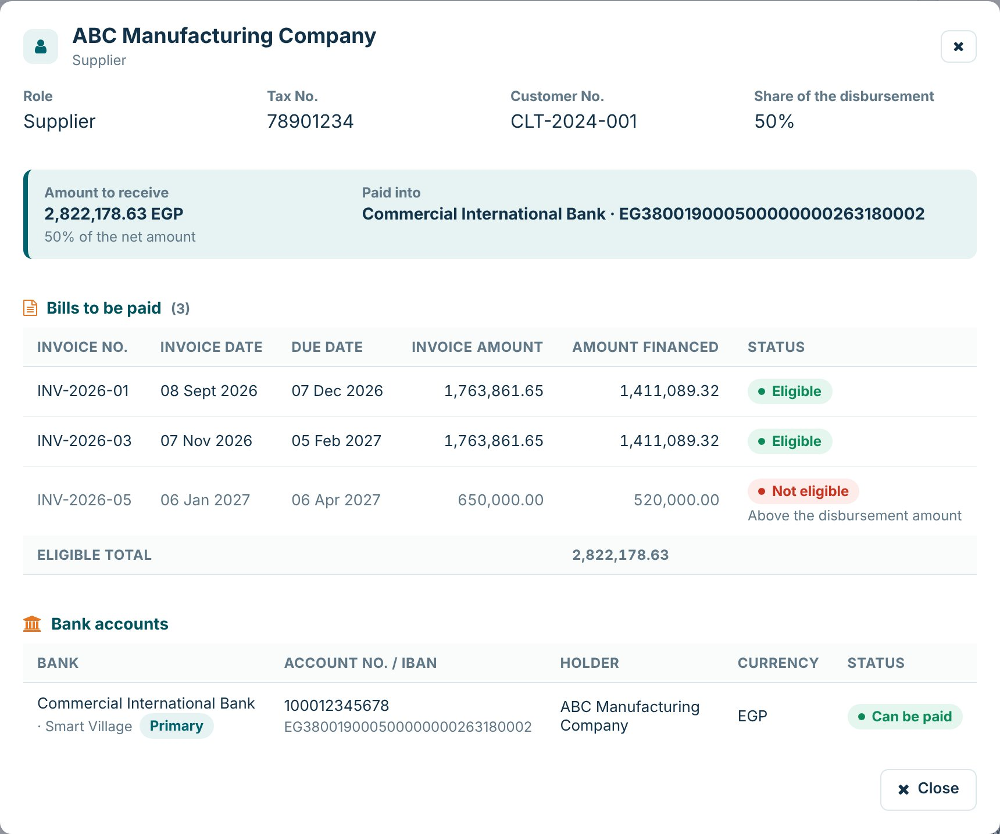
Invoice summary
Press Invoice summary at the top of Treasury Disburse, the Disbursement Request or Invoice Upload. It shows, read only:
- Four boxes: invoices received, minus not eligible, equals eligible, and the value we finance after the advance rate (for example 88% of the eligible amount). The disbursement net amount is shown under them, with any difference.
- Eligible bills by supplier (by debtor in factoring): one line per supplier with its number of bills and totals; click it to show or hide its bills. The last line is the total eligible.
- Not eligible: each invoice left out, with its reason and the total.
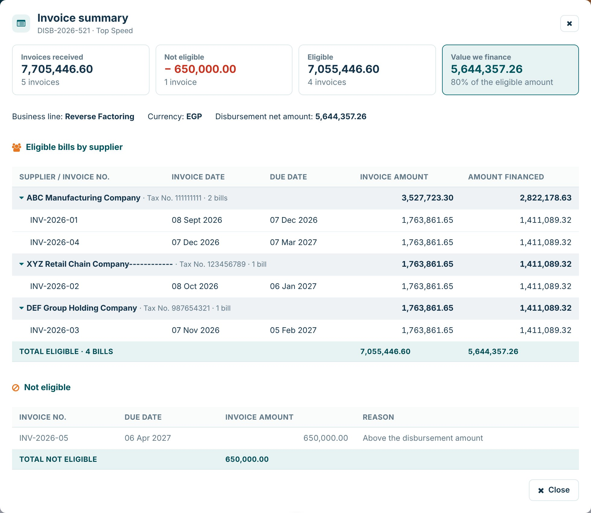
Completed steps, view only
In the Factoring Customer Workspace, the Disbursements tab shows the open step and, under it, a button for each completed step (Initiation, Invoice Upload, Treasury Disburse). The button opens that step's page in view-only mode: a teal strip says so, every field is locked and the step's buttons are hidden.
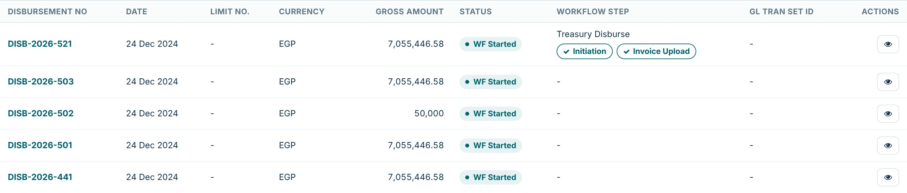
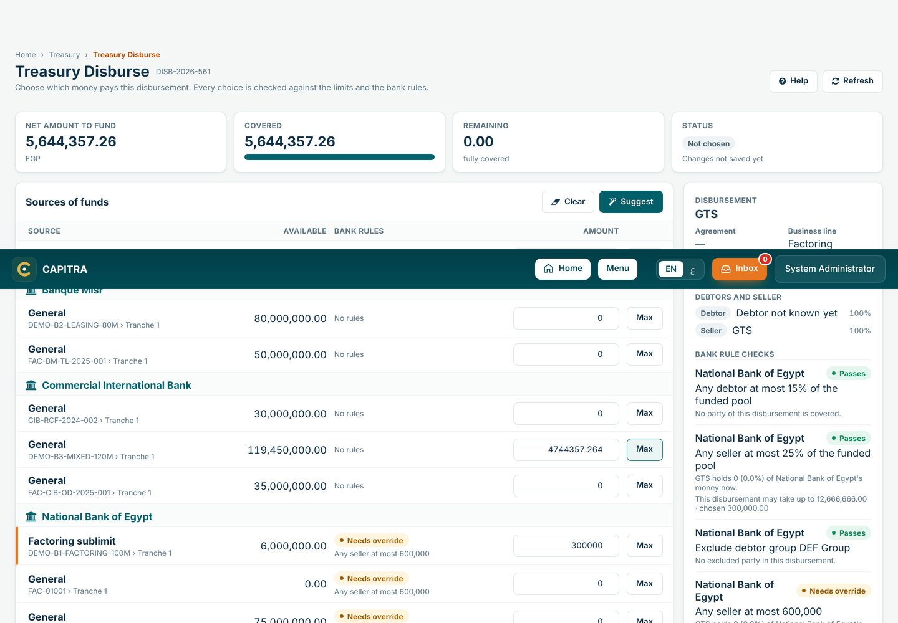
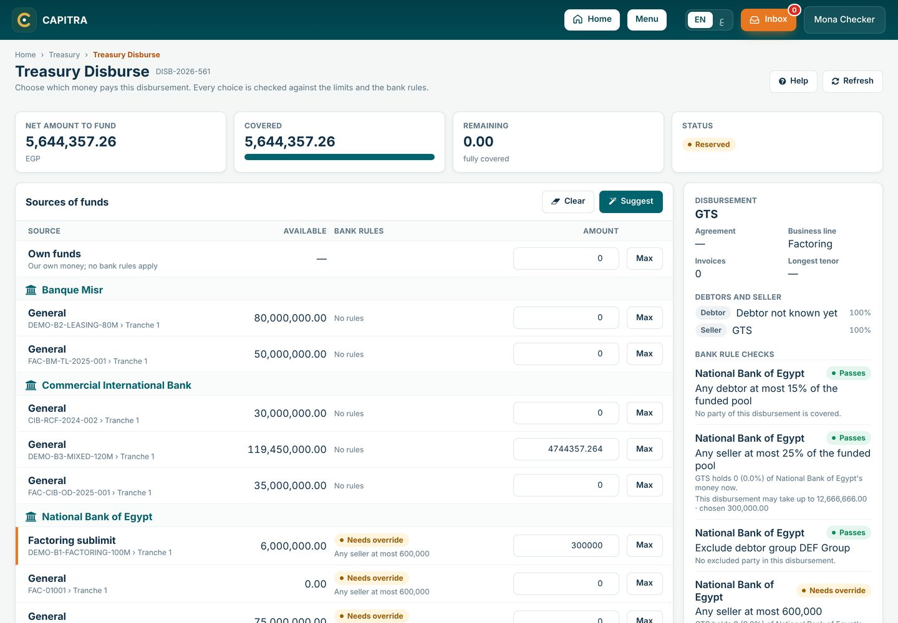
Worked example
Disbursement for ABC, debtor LG, business line Factoring, net 12M.
| Source | Available | Bank rule result | Amount |
|---|---|---|---|
| Own funds | 6M | No bank rules | 0 |
| Bank A › Tranche 1 › Factoring | 8M | LG holds 28M of a 30M cap: up to about 2.3M passes (the pool grows with the drawing) more blocked | 2M |
| Bank B › Tranche 1 › Factoring | 18M | LG at 6% of a 20% cap pass | 10M |
| Total | 12M = net ✓ |
Bank A's Leasing sublimit is shown in grey: Cannot be used: It funds Leasing only.
Why a sublimit cannot be used
| Reason on the line | What to do |
|---|---|
| The facility is suspended (or under renewal, expired …) | Use another facility, or make the facility Active in Bank Limits. |
| The bank has not released this tranche yet | When the bank's letter arrives, make the tranche Active with its release date. |
| The sublimit is suspended | Use another sublimit, or make it Active again. |
| It funds Leasing only (or other business lines) | The sublimit is for another business line. Use one that funds this one. |
| Nothing is left to draw | The sublimit, tranche or facility is fully used or reserved. |
| Bank rule: Exclude … | The bank does not fund this debtor, group, business line, product or client segment. Use another bank or own funds. |
The step guide
Under the top cards, the step guide lists the steps of this page in order, ticks the ones done and highlights the current one. What to do now says the next action in one sentence, with a button for it (Suggest, Save and reserve, Execute, Go to the transfers). When something blocks the way, such as a red bank rule, an override waiting for a second user, or a supplier without a verified bank account, it turns orange and says what to fix.
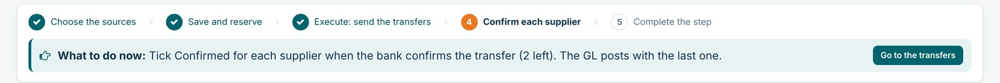
How to fund a disbursement
- Open the disbursement at its Treasury Disburse step from the inbox.
- Press Suggest to fill the lines within every rule, or type amounts. Max fills a line with the most it allows. Suggest fills the bank lines first (most available first) and puts the rest on own funds; when Module Settings says Own funds first, it puts the whole amount on own funds.
- Read the line under each sublimit: ✓ can be used, ⊘ cannot be used and why. Then watch the badges: green passes, orange warns, red blocks. A line that needs an override shows who must approve it.
- When the total equals the net amount and nothing is red, Execute becomes active.
- Execute records a drawdown on each chosen sublimit with the debtor and seller, so Bank Limits and "Highest now" update at once. In the same moment it pays the client and posts the GL (see below). Then Complete the step.
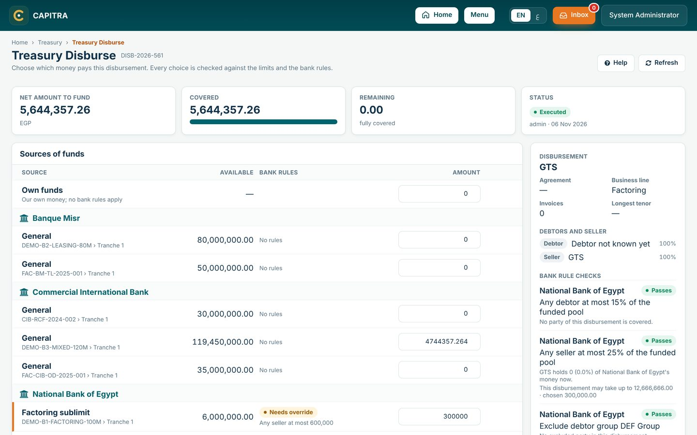
Payment and GL on Execute
Execute does everything at once, or nothing. Each bank puts its money in our account at that bank, and the client is paid from there. Own funds are paid from the main operating account. The Payment panel shows the account for each line before you press Execute.
An escrow account pays only when we have no other account at that bank. Module Settings → Treasury → Escrow accounts may pay set to No stops escrow accounts paying at all; the Payment panel then asks for another account.
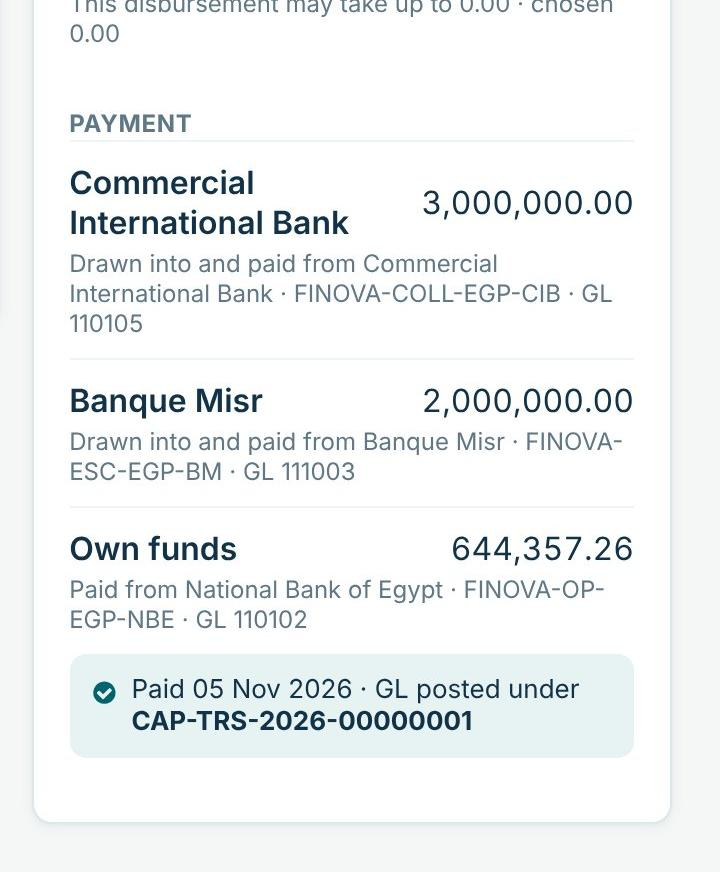
For the 12M example above (Bank A 2M, Bank B 10M) the GL entries, under one number CAP-TRS-…, are:
| Journal | Account | Debit | Credit |
|---|---|---|---|
| 1 · Bank drawdown | Bank A account | 2M | |
| Bank B account | 10M | ||
| 220101 Bank Facilities - Short Term | 12M | ||
| 2 · Payment to the client | 120101 Factoring Receivable - Principal | 12M | |
| Bank A account | 2M | ||
| Bank B account | 10M |
- Own funds appear only in journal 2: we pay from our own account, with no bank borrowing.
- The invoices become FUNDED with their funded amount and date, and the disbursement becomes DISBURSED.
- The accounts come from the rule the Treasury Disburse workflow step names (Workflow designer › the step › Product Event Rule, normally TRS_DISBURSE). When the step names none, the rule linked to the action in Admin Setup › Product Catalog › TREASURY_FUNDING is used. If no rule is found, or the GL refuses (for example a closed period), Execute shows the reason and saves nothing.
Reverse factoring: supplier transfers
In reverse factoring we pay the suppliers, not the buyer, and each supplier may bank somewhere else. So the money moves in stages, with GL accounts kept apart from factoring, and the whole GL posts once, under one Tran Set ID:
- Before Execute the table shows the Planned transfers. A supplier without a verified bank account in Customer 360 shows in red, and Execute stays blocked until each one has an account.
- Execute saves one transfer per supplier with its bank, IBAN and amount, as Sent. Nothing posts to the GL yet. The Confirmed boxes appear now.
- When the bank confirms a transfer, tick its box and press Confirm (a bank reference is optional). The box in the header ticks every supplier at once.
- When the last supplier is confirmed, the GL posts under one Tran Set ID: journal 1 the bank drawdown (rule TRS_RF_DRAWDOWN: DR our bank account / CR reverse factoring bank borrowings), then one journal per supplier (rule TRS_RF_TRANSFER: DR reverse factoring receivable / CR our bank account), named after the supplier. If the GL refuses, nothing is confirmed.
- Complete works only when every supplier is confirmed. To complete now, tick all of them.
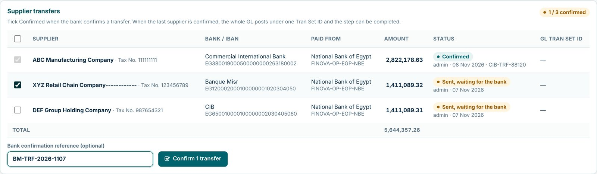
GL to be posted
Below the sources, GL to be posted lists every line the step will post, from the saved sources: journal, account, description, debit and credit, with the totals. It shows for factoring (posted at Execute) and for reverse factoring (posted at the last confirmation). Once posted, the title becomes GL posted and shows the Tran Set ID. If a rule is missing or a bank account has no GL account code, it says so here before you press anything.
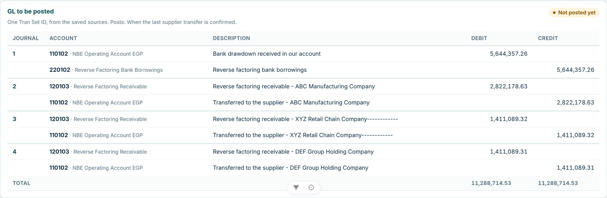
Every completed step shows the GL transaction sets it posted: on its button in the customer's Disbursements tab, and at the top of its view-only page. For reverse factoring, Treasury Disburse shows its single Tran Set ID.
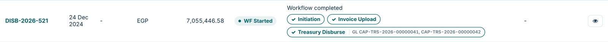
Rules to remember
- One disbursement may be split across several sources.
- A line can never take more than its available amount, which already respects the tranche and facility above it.
- Money chosen but not executed shows as reserved (orange), so two people cannot use the same room.
- Gates 1 and 2 were checked before this step. Only bank rules (gate 3) are checked here.
Messages and what to do
Capitra shows these messages in a pop-up when a save is refused.
| Message | What it means and what to do |
|---|---|
| The tranches would add up to …, above the facility limit | The new tranche is too large. Reduce it, or raise the facility limit first. |
| The tranches already add up to …; the limit cannot be lower | Reduce or close a tranche before lowering the facility. |
| Enter the date the bank released the tranche | An Active tranche needs its release date from the bank's letter. |
| The tranche has money drawn or reserved; it must stay Active | Wait until it is repaid, or move the usage, before making it Draft or Closed. |
| The dedicated sublimits would add up to …, above the tranche | Make this sublimit smaller, make it a shared cap, or enlarge the tranche. |
| A sublimit cannot be above its tranche | Even a shared cap cannot exceed the tranche it sits in. |
| The sublimit has money drawn or reserved; it cannot be closed | Suspend it instead to stop new drawings. |
| Enter the limit as a percent or as an amount | A concentration rule needs one of the two. |
| The warning must be above 0 and below the limit | For a 15% limit, a warning of 12% is valid; 15% or more is not. |
| You made the last change; another user must verify it | Ask a colleague with TRS.VERIFY to verify the rule. |
| Enter why the rule no longer applies | Stopping a rule needs a reason, kept in history. |
| Another facility has this reference | Facility references are unique. Check for a duplicate entry. |
| Choose what is excluded / Choose which one the limit is for | A business line, product or client segment rule needs the one it is for. |
| … cannot fund this disbursement. (reason) | The sublimit cannot be used, for the reason given. Choose another source. |
Permissions, statuses and glossary
Permissions Admin Setup → Roles
| Permission | Allows |
|---|---|
TRS.VIEW | Open Bank Limits and see the tree and rules |
TRS.EDIT | Add and change facilities, tranches, sublimits and rules; stop a rule |
TRS.VERIFY | Verify a rule entered by another user |
Statuses
| Item | Statuses |
|---|---|
| Facility | Term sheet · Active · Suspended · Under renewal · Expired · Closed. Only Active can be drawn. |
| Tranche | Draft (not released) · Active (released) · Closed |
| Sublimit | Active · Suspended · Closed |
| Bank rule | Waiting for verification · Active (checked) · Stopped |
Glossary
| Term | Meaning |
|---|---|
| Available | What can still be drawn, after the limits above are respected |
| Debtor | The company that owes the invoice and pays it at maturity |
| Funded pool | What we have drawn from a bank (outstanding + reserved) |
| Outstanding | Drawn and not yet repaid |
| Reserved | Held for an approved disbursement that is not yet paid |
| Scope | The business lines a sublimit may fund |
| Seller / supplier | The company that sells the invoice: our client in classic factoring, the buyer's supplier in reverse factoring |
| Source of funds | Own funds or a bank sublimit chosen to pay a disbursement |
| Tenor | Days from the invoice date to its due date |
CAPITRA · Treasury User Manual · v1.8 · November 2026